发信人: ZJC (弎和弦), 信区: outdoor
标 题: 【野协团爆】【第五弹】装备部！
发信站: 饮水思源 (2013年06月08日00:22:04 星期六)
(σ‘・д･)σ~装备部来啦~~
装备部部长：郭亚舟
副部长：张硕、王森、周子豪
留部干事：陈浩天、虞翔元、朱颖、张璟聪老师
（PS.好难得有人会喊我名字。。感动ing。。。(*′ノ0`)）
下面团曝开始，就先从副部脑残们开刀吧：
Hello，我是副部长张硕，来自微电子学院~
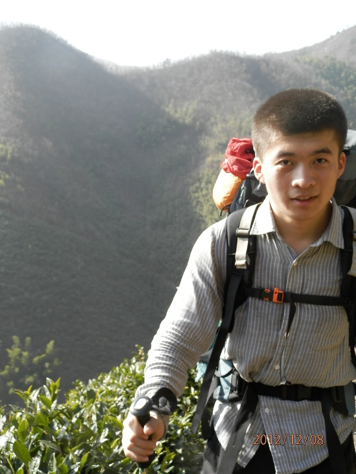 screen.width - 200){this.width = screen.width - 200}">
再来个宏伟点的：
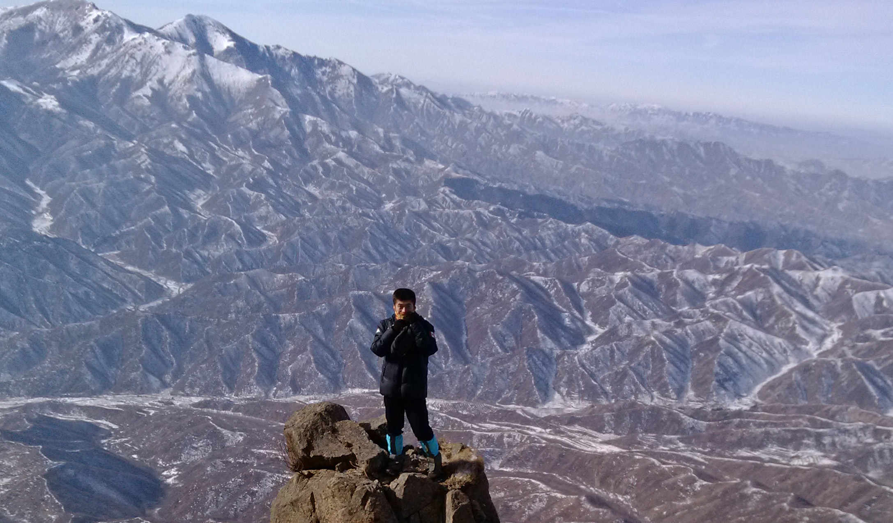 screen.width - 200){this.width = screen.width - 200}">
其实，我是个走不挫、背得包、爬了楼、翻上墙、响珰珰一只点头哥！
恁野人每谁教你钻入高神跑不完、虐不停、怨不断、逃不脱但无脑乐的闹心训练？
我玩的是拼凑帐，饮的是冰锥水，赏的是浙东水，滑的是灵山雪。
我也会犯二，会偷懒，会消沉，会牢骚，会太极。
但你便是落了我牙、歪了我嘴、瘸了我腿、折了我手，天赐予我这几般儿歹徒症候，尚兀
自不肯休。则除是杰哥挂我科，马姐停我课，高数无踪影，英语丧冥幽！
天哪，那其间才不一直在这野协路儿上走。——仿关汉卿《一枝花》
最后再来两张：
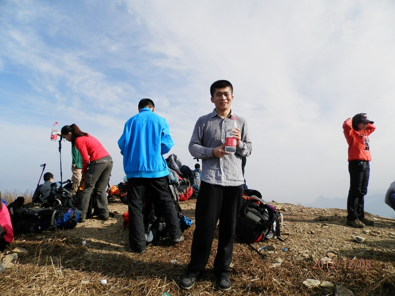 screen.width - 200){this.width = screen.width - 200}">
最后留给世界一个背影
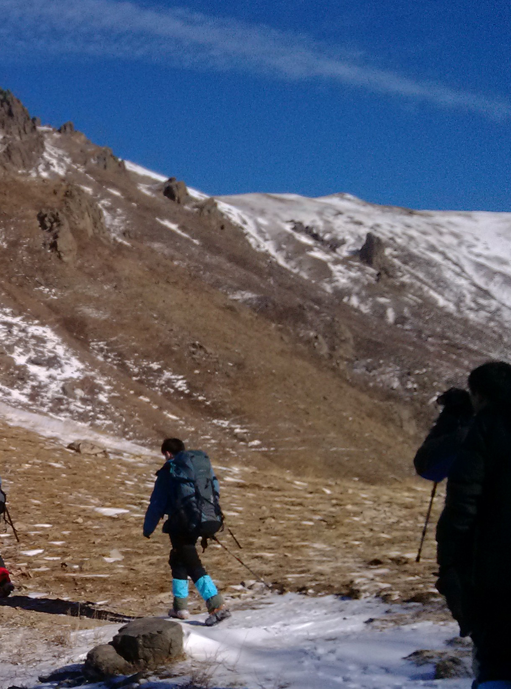 screen.width - 200){this.width = screen.width - 200}">
请大家相信我们，也许我们就能缔造一个新装备部！
大家好，我是装备部副部长王森（上天派下来拯救部长郭亚舟的啊哈哈！），他们叫我三
脑残（虽然我一点也不脑残，只是装作和他们一样脑残而已）爱好：户外徒步，登山，攀
岩，游泳，骑行，跑步……
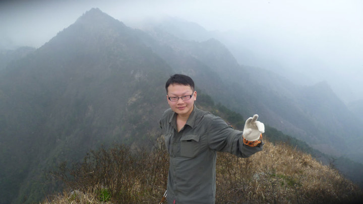 screen.width - 200){this.width = screen.width - 200}">
摄于金紫尖
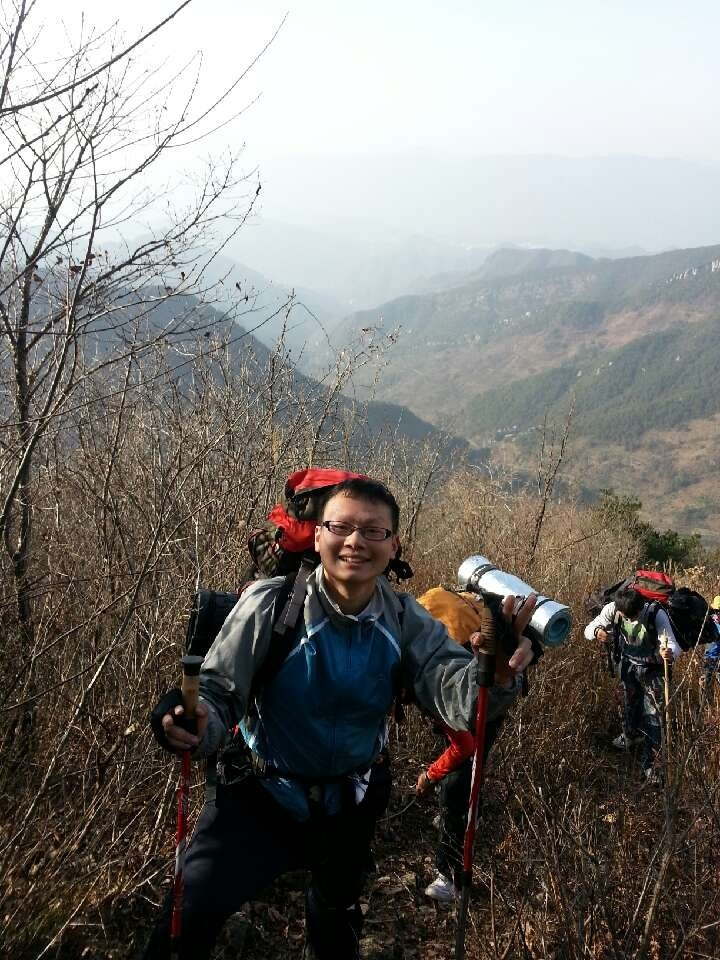 screen.width - 200){this.width = screen.width - 200}">
摄于昱岭关
最后再奉送一张脑残游泳照
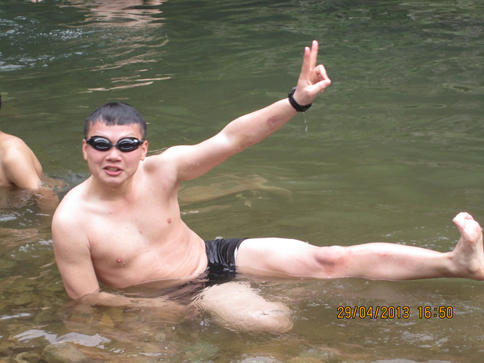 screen.width - 200){this.width = screen.width - 200}">
嗯，作为装备部的成员，我喜欢绳结，见过很多，也会很多。
另外，我来说一下对装备部的期望，我们装备部是！很！有！野！心！的！
在下个学期，我们要掌握所有的技术与非技术装备！
所有的技术培训都！要！且！必！须！要！我！们！来！做！！
（咳咳……纯属个人观点不代表装备部官方声明）
大家好，我是周子豪~宣传部自曝过一次了。
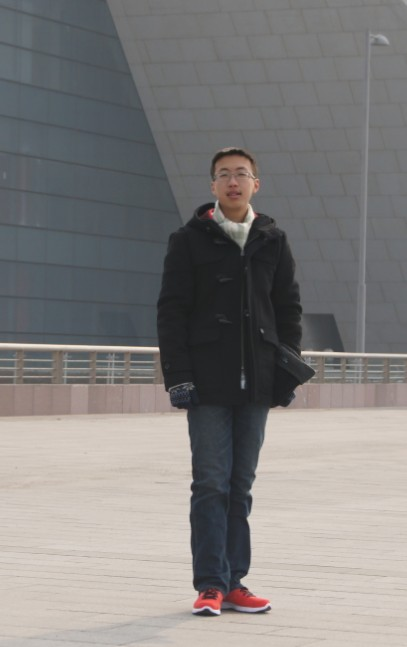 screen.width - 200){this.width = screen.width - 200}">
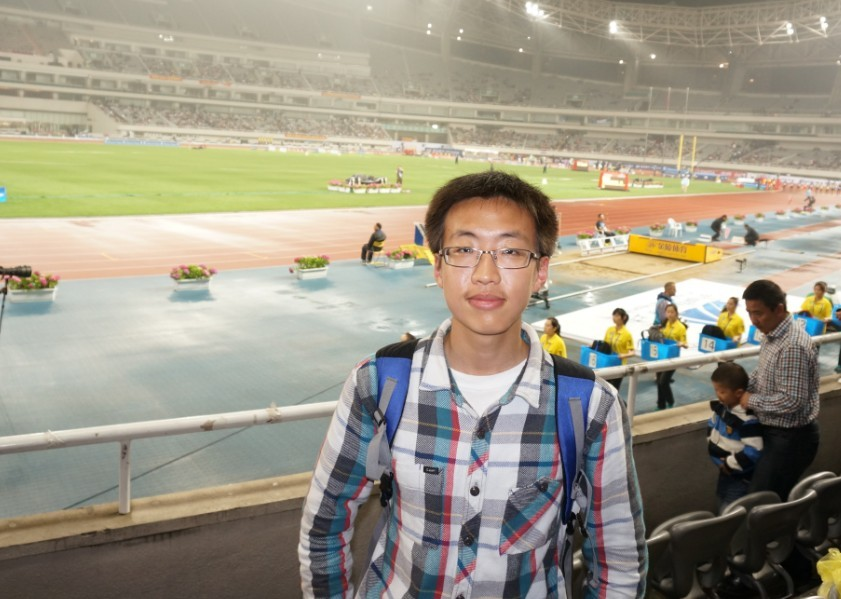 screen.width - 200){this.width = screen.width - 200}">
表示自己不知道为什么就加了野协，不知道为什么就走了条线，不知道为什么就参加会内
赛狂虐自己，也不知道为什么就来到了装备部~~
好吧，卖个萌先，其实我是知道的。
加野协是为了强健自己的身心，走线才更加了解协会的活动，参加会内比赛…（这个我不
知道会这么虐啊，有木有）
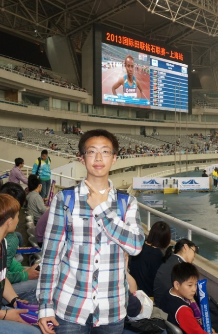 screen.width - 200){this.width = screen.width - 200}">
用这个表情来表示下对我部的信心！
装备部的话，亚舟学长的鼓励下我还是没有让自己再退缩，毕竟能够负责协会如此重要的
一部分工作，我还是非常荣幸的。
新的装备部由亚舟部长，我，王森，张硕当副部长。算是一个比较靠谱的梯队，我们将致
力于装备的管理，目的是保证野协的装备安全，也就是保证使用装备的队员的安全。装备
是协会的根基，我们会努力保证这一点！
另外，装备部还会负责一些装备培训，这一点是我们需要改进的。当然，目前我们还需要
更好地学习装备知识。
留部干事：
我是来自材料学院的大一陈浩天！
自白：我比较水的，喜欢外出，喜欢骑车。
下面是骑车去西湖的照片
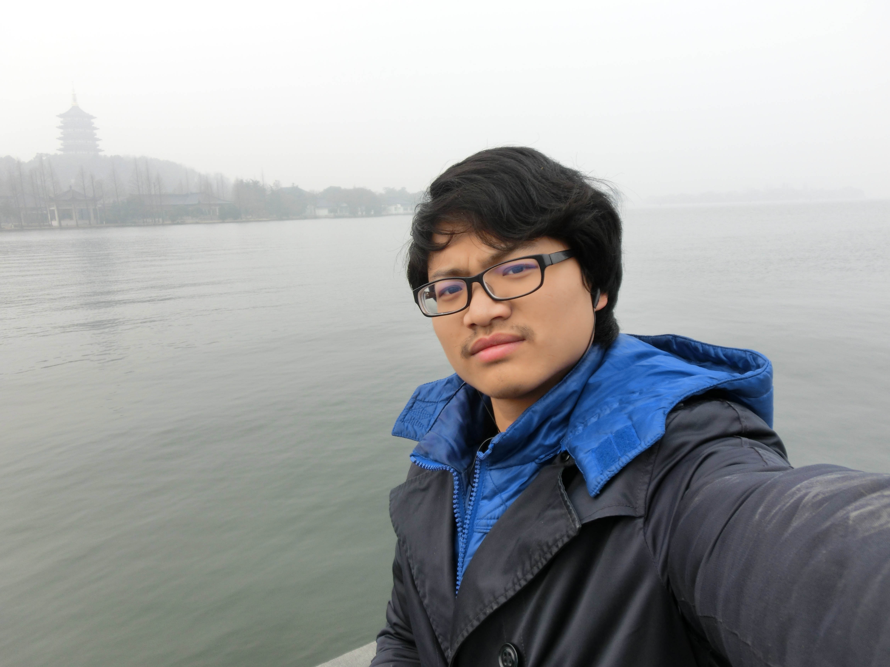 screen.width - 200){this.width = screen.width - 200}">
再来一张自拍吧
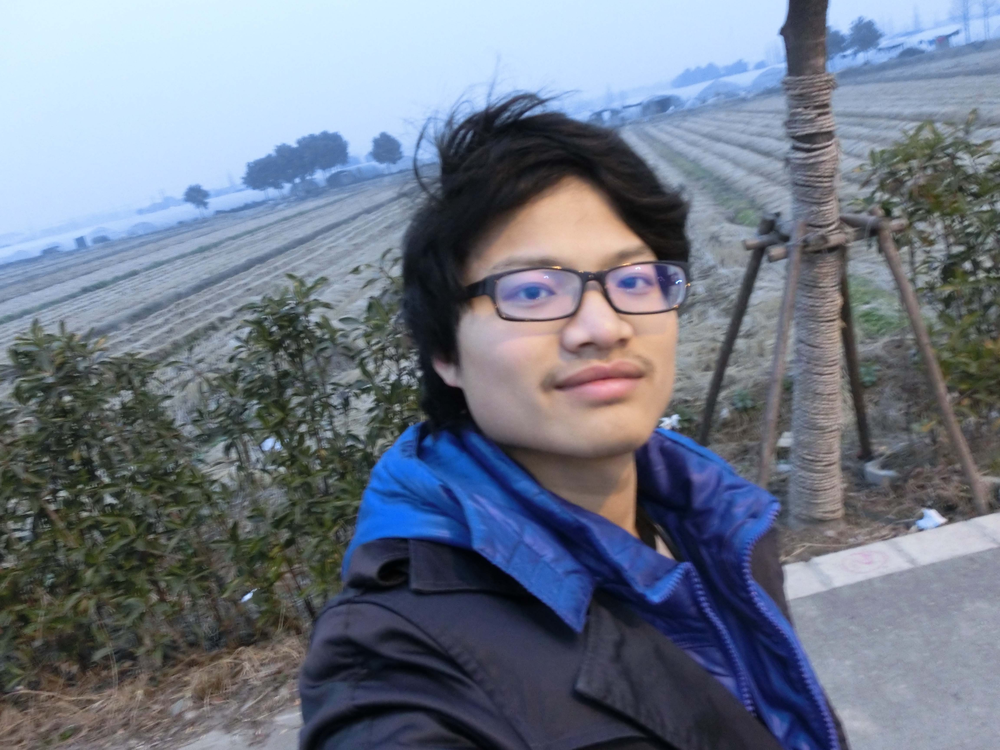 screen.width - 200){this.width = screen.width - 200}">
我坚信的一句话：顽强的毅力能征服世界上任何一座高峰。
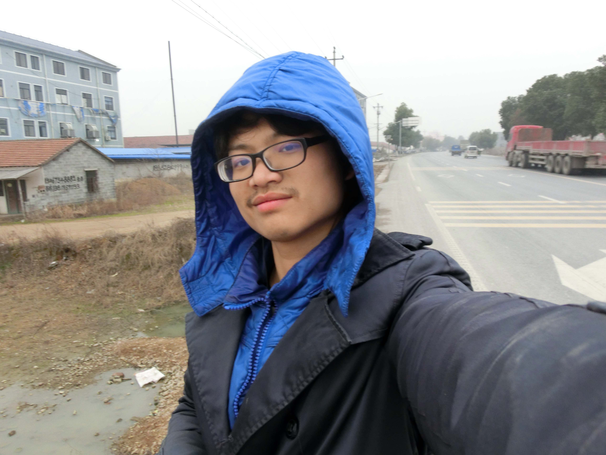 screen.width - 200){this.width = screen.width - 200}">
我是朱颖，来自外院大一。
其实我是中医药大学的，因为联合培养而被送来交大交换两年，也就是说明年我就要走了
~但是在走之前还是想好好玩一玩，野协就是个让我玩的比较开心的地方╰(*°▽°*)╯
几张照片，嗯，本人长的比较挫，所以照片什么的很少，大家将就着看吧。第一张呢是去
年的东白山之旅，真心长见识了啊！感觉一路上都很好玩很哈皮的~
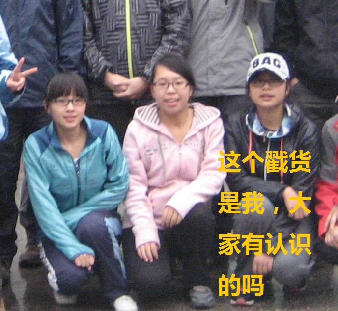 screen.width - 200){this.width = screen.width - 200}">
第二张，额，是去青岛的时候拍的，表示跟旅游团真是很亏啊，还是跟协会好o(￣ヘ￣o＃
)
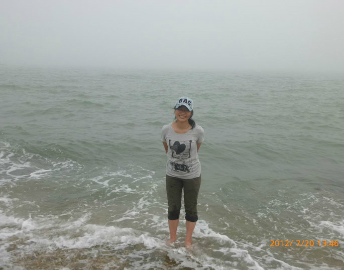 screen.width - 200){this.width = screen.width - 200}">
下面这张是高考刚结束的时候的，无视我的小肚子，那绝壁不是真相，那只是高考那几天
我老妈干的，天天都是大补，不胖才怪啊(╯‵□′)╯︵┻━┻
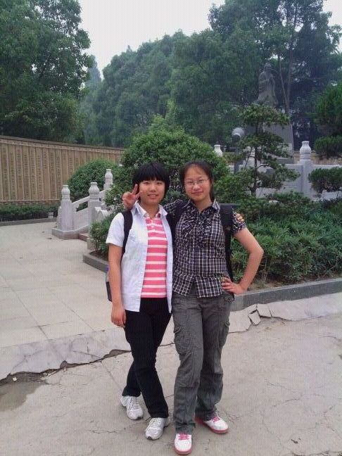 screen.width - 200){this.width = screen.width - 200}">
最后还是祝我们协会，装备部越来越好吧~
我叫虞翔元，是12级预防医学的，虽然我只在野协待的不是很多，但是却深深地体会到这
个组织的团结和友爱！
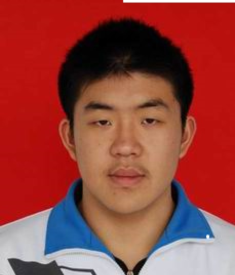 screen.width - 200){this.width = screen.width - 200}">
screen.width - 200){this.width = screen.width - 200}">
每周的训练在锻炼强健体魄的同时也使装备部的野人们更加了解，熟悉。
记得参加的一次野协烧烤聚会，那是我第一次自己动手烤食物，非常的新奇又非常开心。
总之，野协是一个和睦的大家庭，而这其中，装备部的野人们更是团结一心，为协会做出
了突出贡献。
啊拉啦~~于是我又来了咩~(′∀`=)
我真的就是来爆照的。。。
表示已经在小清新宣传部爆过了。。。脸都混熟了叭 = =
所以还是来几张不大正常没啥形象的叭。。。╮（╯◇╰）╭所以这是要自毁形象的节奏
咩~SIGH。。。
那个绿色的一团就是本尊 = =
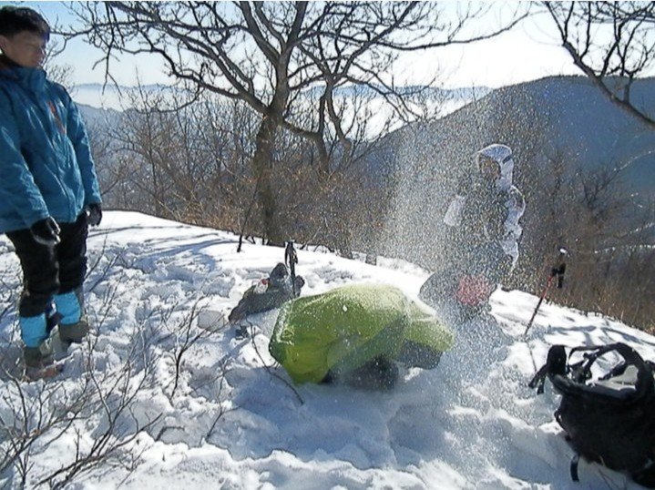 screen.width - 200){this.width = screen.width - 200}">
几个脑残不说了。。。真是拉低智商的节奏啊。。╰（｀□′）╯
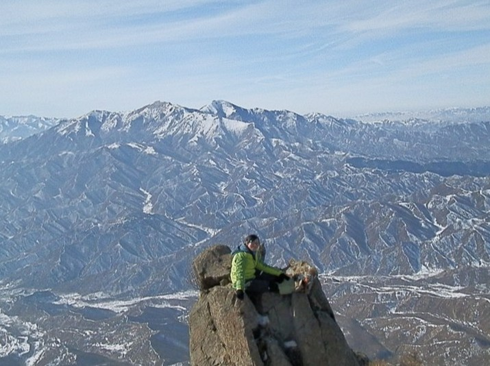 screen.width - 200){this.width = screen.width - 200}">
点头哥来张宏伟的，于是我就此效仿叭(＠。ε。＠)
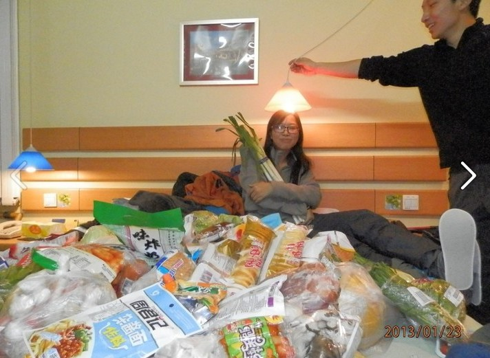 screen.width - 200){this.width = screen.width - 200}">
私以为大葱是极好的东西、忽略面前的那一堆腐败用品(●′ω`●)
啊~伟大的装备部~在下一年里要好好协助部长大人的工作的说(ｏ。◇。)
所以就请出部长大人叭~
最后是同样已经曝过的部长郭亚舟（太老了就不抢年轻人风头了！）：
大家好，我是来自电院的郭亚舟，竟然快大三了啊。
爱好挺多的，对电类专业挺感兴趣（- -b），什么养花种草书法干过挺多的（什么叫老年
人做的？这叫做“静态的我”好么），还有看到好的书就不能自拔（常态是同时顾着五六
本小说什么的）……崇尚简单的一切。
很高兴能成为装备部长，其实我觉得自己还比较容易交流的，虽然性格上内向点……
上照！不过我太懒了，有时候出去都不带一张照片回来~美景在心中了！
（高三的时候，生活太幸福了，很胖当时）
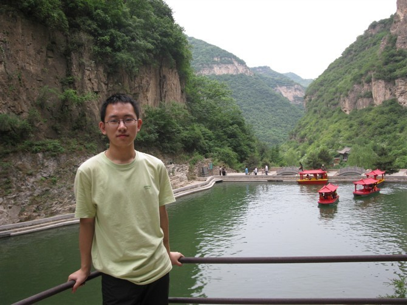 screen.width - 200){this.width = screen.width - 200}">
（下面昱岭关一张照片，感谢ekc的拍摄~）
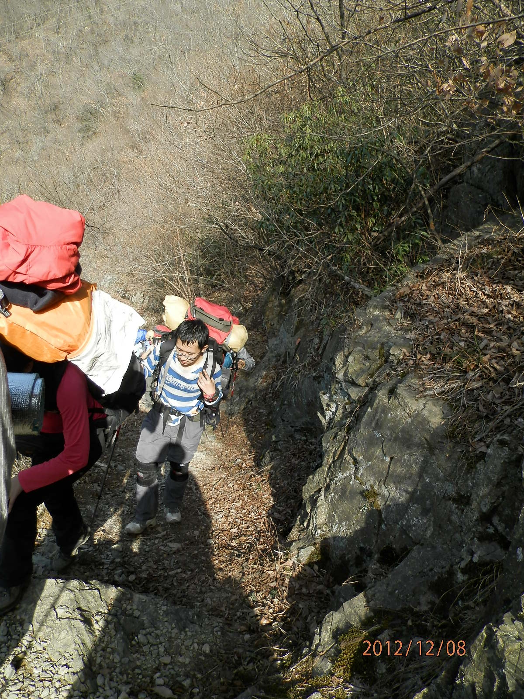 screen.width - 200){this.width = screen.width - 200}">
协会带给我们空前的视野，尝试些别的东西，而部长职务带给我一定压力和挑战，我也需
要不断提高自己各方面的能力！
最后，壮哉我大装备部！
--
自然自由自在，如雲如海如山。
※ 来源:·饮水思源 bbs.sjtu.edu.cn·[FROM: 183.192.198.48]
※ 修改:·ZJC 于 2013年06月08日00:23:58 修改本文·[FROM: 183.192.198.48]
※ 修改:·ZJC 于 2013年06月08日00:25:29 修改本文·[FROM: 183.192.198.48]
※ 修改:·ZJC 于 2013年06月08日00:28:41 修改本文·[FROM: 183.192.198.48]
|